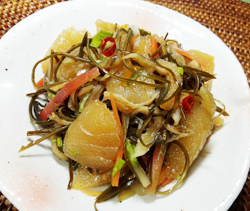

松前漬け
- 調理時間：2日間（漬け込み時間）
- （一人当たり）
- カロリー：68kcal
- たんぱく質：5.2g
- 脂質：0.4g
- 炭水化物：11.1g
- 塩分：1.4g


- かずのこ
- 2～3本
- 昆布
- 50g
- スルメ
- 1枚50g
- ニンジン(今回は３色使用）
- 1本100g
- セロリ
- 1/2本
- 切干大根
- 15g
- ・醤油
- 大さじ4
- ・酒
- 大さじ3
- ・みりん
- 大さじ3
- ・水
- 大さじ3
- ・砂糖
- 大さじ2
- ・赤唐がらし
- 1～2本
漬け汁A


- 昆布、スルメは水にくぐらせ、ペーパータオルの上において５～10分そのままやわらかくする。
昆布とスルメは、長さ4cmに細切りにする。 - ニンジン、セロリは２cm幅で長さ３cmのやや太い棒切りにする。
ザルに入れ、熱湯を回しかける。 - 切干大根は、さっと湯がいて水をきる。
- 数の子は食べやすい大きさに割いておく。
- 鍋にAの漬け汁の材料をいれて、ひと煮立ちさせる。
- ボウルに①～④の材料を入れ、漬け汁を回しかけ、よく混ぜる。
- 途中、上下に返してながら、2日間ほど漬け汁につけてなじませる。
※保存容器に入れ、冷蔵庫で保存できる。
松前漬け
松前漬けは、北海道の松前町周辺の郷土料理です。ニシン漁が栄えた江戸時代の後期から、大量に獲れて余ったニシンの魚卵である数の子と特産物の昆布を利用して作られました。当時は、塩味が主流でしたが、時代とともに醤油、みりん、砂糖をベースに作るようになりました。
松前漬けに使われる「数の子」はニシン（二親）の子で子宝と子孫繁栄を表します。「スルメイカ」は、寿留女と書き、結納に使用されるめでたい一品。昆布は「喜ぶ」にかけて正月飾りにもつかわれる縁起物。お正月の残りの食材で作る保存食にいかがでしょうか。